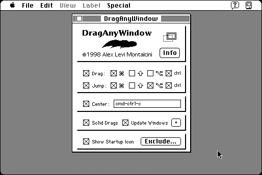

Download
drag-any-window-45.zip (86K) DragAnyWindow 4.5 repackaged into a zipped hfs disk image and checksum file. The disk image can be mounted with Mini vMac.
drag-any-window-45.hqx (119K) DragAnyWindow 4.5 in the original format.
copyright: Alessandro Levi Montalcini
mod date: Oct 19, 1998
license: Freeware
last known url
(gone)
Allows “live window dragging with real-time refresh”. Also allows you to move windows that are not normally draggable.

If you find these downloads useful, please consider helping the Gryphel Project, which hosts them.
Here are the md5 checksums for the downloads, signed with Gryphel Key 5:
--------- GRY SIGNED TEXT --------- 0b2c42b0ce7274cb5e77928c391627a5 drag-any-window-45.zip e9bbc53c31d53ec02ef5b278ff4478d9 drag-any-window-45.hqx ------- BEGIN GRY SIGNATURE ------- Gry/4Xa8CFcUzxdN/Lo+DOge7pVmwRMT480tdTyyNLj6zFru5buSpckfaq/zX6zu I/y7XDePcRnV/Gym36pekleR1KGUy2vjteIH3VJI3yCubV7WusdT4Cz5p7HYz4Gc 7wuEFDKFFJTzB5yyR8/4f/lkz0CFhQr7rCLShq4AALQwBzV5Eou/zIRppO1b9c/U -------- END GRY SIGNATURE --------